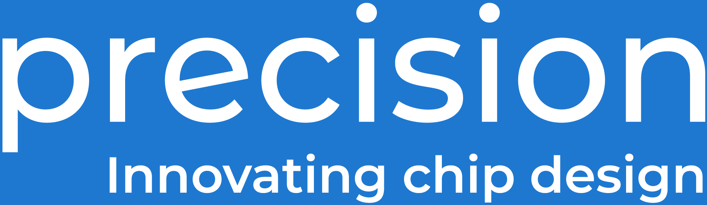

Jack Luar
Free Silicon Conference 2026

"Why is my chip failing timing?" — A question every designer asks
AI Assistant ←→ MCP Server ←→ Your Tools
| Feature | Description |
|---|---|
| Interactive Sessions | Create persistent OpenROAD sessions |
| Command Execution | Run Tcl commands with timeout support |
| Report Visualization | View placement, routing, CTS images |
| Session Management | Multiple concurrent sessions |
| Command History | Search and review past commands |
# 1. Create a session
create_interactive_session()
# 2. Load a design
interactive_openroad("read_verilog my_design.v")
# 3. Run synthesis
interactive_openroad("synth_design")
# 4. Check timing
interactive_openroad("report_timing")
# 5. View results
list_report_images(platform="sky130", design="my_design")
| Category | Examples | Behavior |
|---|---|---|
| Allowed | report_*, get_*, set_* | Execute immediately |
| Blocked | exec, source, exit | Ask for confirmation |
| Dangerous | file, socket | Always blocked |
Why this matters: AI agents can be helpful but cautious
| User | Use Case |
|---|---|
| Junior Engineers | Learn OpenROAD with AI guidance |
| Senior Engineers | Debug timing violations faster |
| CAD Teams | Build AI-powered automation |
| Researchers | Explore AI-assisted hardware design |
# Install pip install openroad-mcp # Use with Claude Code claude --mcp-server openroad-mcp # GitHub github.com/your-repo/openroad-mcp
Community:
Contact: Jack Luar
GitHub: github.com/your-repo/openroad-mcp
Docs: openroad-mcp.readthedocs.io